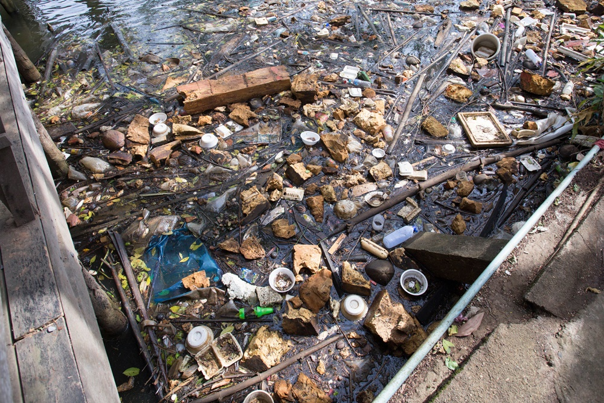
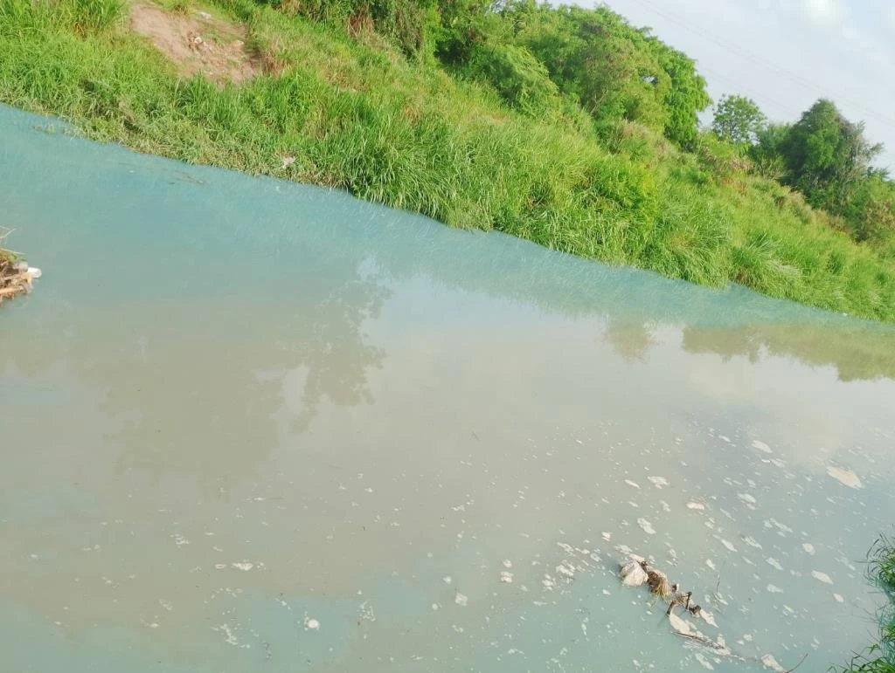

น้ำเสียประกอบด้วยของแข็งและสารเคมีหลากหลายชนิด โดยของแข็งในน้ำเสียมีทั้งที่ตกตะกอนได้ แขวนลอย และละลายน้ำ ซึ่งมักเป็นสารอินทรีย์ที่ย่อยสลายช้า ทำให้น้ำขุ่น เกิดตะกอน ตื้นเขิน และขาดออกซิเจนส่งผลต่อสิ่งมีชีวิตในน้ำ ด้านเคมี น้ำเสียมีสารอินทรีย์ เช่น คาร์โบไฮเดรต โปรตีน ไขมัน ที่จุลินทรีย์ใช้ย่อยทำให้เกิดกลิ่นเหม็น และวัดด้วยค่าบีโอดี (BOD) สารอนินทรีย์ เช่น คลอไรด์ ไนโตรเจน ฟอสฟอรัส และโลหะหนักอาจปนเปื้อนจากอุตสาหกรรมในบ้าน นอกจากนี้ยังมีน้ำมัน ไขมัน สารซักฟอก และธาตุอาหารที่ทำให้เกิดสาหร่ายบลูมและลดออกซิเจนในน้ำ กำมะถันในของเสียสามารถเปลี่ยนเป็นก๊าซไข่เน่า (H₂S) ในสภาวะไร้อากาศ ส่งกลิ่นเหม็นในระบบบำบัดน้ำเสียแบบไม่ใช้อากาศ
🗓️ วันที่เกิดเหตุ: 23 มิถุนายน 2568
📍 สถานที่: หมู่ 1 ตำบลมาบยางพร อำเภอปลวกแดง จังหวัดระยอง
ชาวบ้านพบรถบรรทุกลักลอบทิ้งน้ำเสียลงคลองสาธารณะ ส่งผลให้น้ำมีสีขุ่นและมีกลิ่นเหม็นรุนแรง พร้อมพบปลาตายจำนวนมากในบริเวณดังกล่าว ชาวบ้านจึงร่วมมือกับเจ้าหน้าที่ อบต. และตำรวจ เข้าจับกุมผู้กระทำผิดทันที
เบื้องต้นพบว่าเป็นน้ำเสียจากกิจกรรมอุตสาหกรรม โดยไม่ได้ผ่านการบำบัดอย่างถูกต้อง เจ้าหน้าที่กำลังเร่งตรวจสอบที่มา และสั่งให้โรงงานเร่งปรับปรุงระบบบำบัดน้ำเสียให้ได้มาตรฐาน
⚠️ ผลกระทบ: น้ำเน่าเสีย, กลิ่นเหม็น, สัตว์น้ำตาย, ชาวบ้านได้รับผลกระทบด้านสุขภาพและคุณภาพชีวิต
✅ การตอบสนอง: จับกุมผู้กระทำผิด ตรวจสอบแหล่งที่มา และกำชับโรงงานให้แก้ไขทันที
กรมควบคุมมลพิษ. (2566). รายงานสถานการณ์มลพิษของประเทศไทย ปี พ.ศ. 2565. https://www.pcd.go.th/publication/4551/
กรมประชาสัมพันธ์. (2568, 23 มิถุนายน). ลักลอบทิ้งน้ำเสียที่มาบตาพุด จ.ระยอง. https://mgronline.com/local/detail/9680000041214